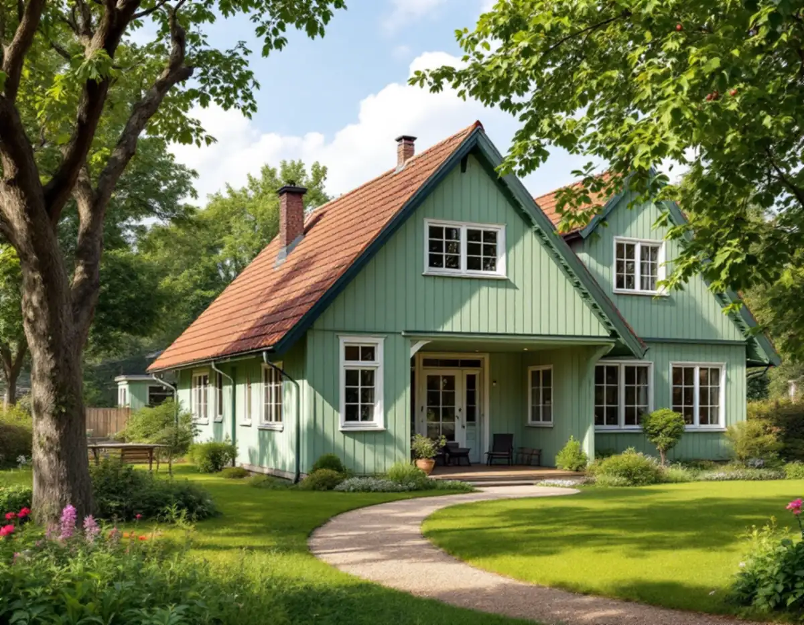
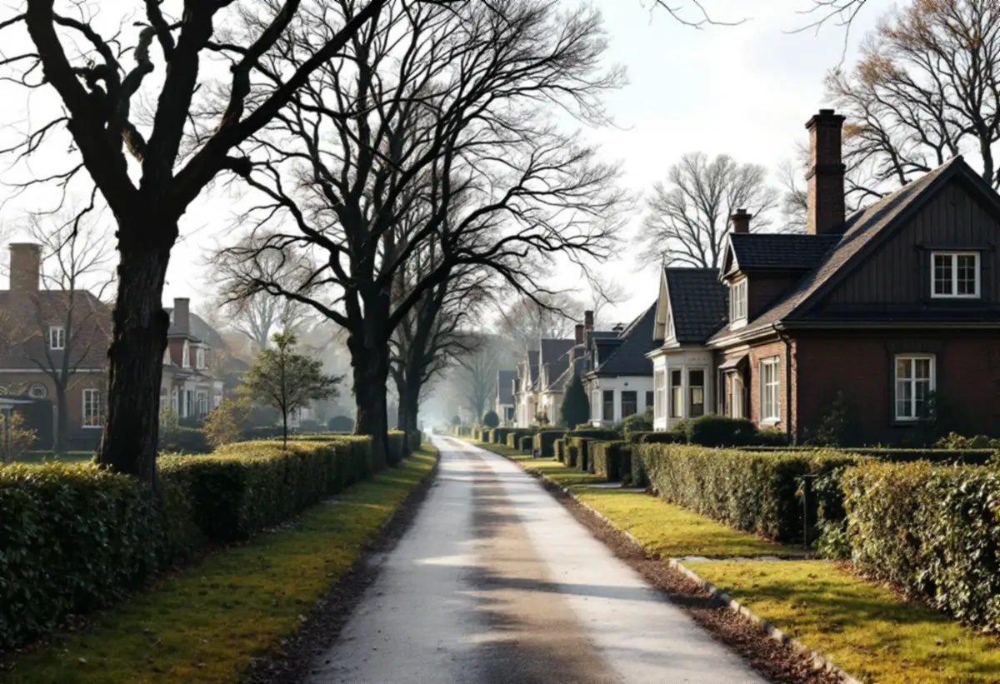
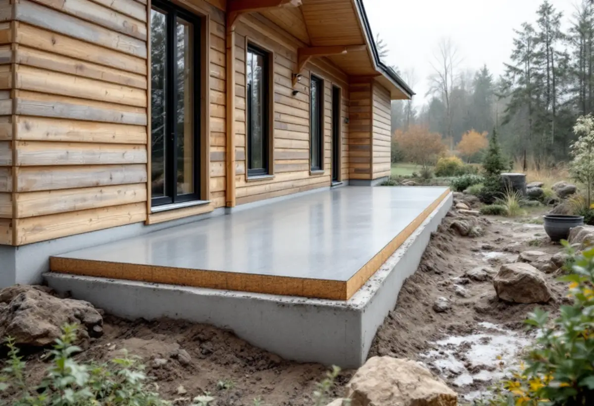

Platsbesök
Gratis besök där vi mäter huset, tomten och avstånden.
Spångas villastäder växte fram runt järnvägen, med fritt liggande villor på stora tomter. Där finns ofta plats att bygga till – men också en kulturmiljö att ta hänsyn till. Geal Entreprenad AB reder ut reglerna för din tomt och bygger till huset med total entreprenad.

Stadens vägledning Varsam utveckling av småhus- och villaområden räknar Solhem, Bromsten, Flysta och Sundby till villastäderna. Vägledningen berättar att små stationssamhällen uppstod när järnvägen byggdes ut och att Spånga på 1910-talet blev ett municipalsamhälle med egen administration och beskattningsrätt. I vägledningens tabell står Solhem som kulturhistoriskt värdefull miljö.
Enligt områdesfakta för 2025 fanns 1 946 småhus med äganderätt i Solhem, 916 i Bromsten, 657 i Flysta och 525 i Sundby. De flesta småhusen i de fyra områdena ägs alltså med äganderätt.

Villastäderna fick stora tomter. Vägledningen anger tomter på 1 500–3 000 kvadratmeter som typiska, och när nya planer togs fram för delar av villastäderna på 1930-talet blev tomterna 700–1 000 kvadratmeter. I Solhem fick enligt vägledningen bara en tiondel av tomten bebyggas.
En äldre plan kan alltså sätta en snäv gräns för hur mycket huset får växa. Stockholms stad skriver att en lovfri tillbyggnad på ett en- eller tvåbostadshus får strida mot detaljplanen, till exempel stå på mark som inte får bebyggas. Men det gäller bara om ingen utökad lovplikt finns – i en särskilt värdefull miljö krävs bygglov, och då prövas tillbyggnaden mot planen.
För villastäderna skriver vägledningen att det vanligaste är att tillbyggnader läggs mot trädgårdssidan och att man undviker att bygga mot gatan. Men den gör ett undantag: ligger huvudbyggnaden fritt på tomten med trädgården mot gatan kan en tillbyggnad mot gaturummet fungera, utan att gaturummet påverkas negativt.
Vägledningen ber också fastighetsägaren fundera på hur huset förhåller sig till grannarna – är det en blandning av hus från olika tider, och finns det något gemensamt uttryck att fånga upp? Vi börjar därför med att titta på gatan, inte bara på huset, när vi föreslår var tillbyggnaden ska ligga.
Utan utökad lovplikt får en tillbyggnad vara högst 30,0 kvadratmeter sammanlagt och inte gå över husets nock. Den ska stå minst 4,5 meter från gränsen mot granne, samfällighet eller allmän plats, annars krävs skriftligt medgivande. För gatu- och parkmark är det oftast staden som ska ge medgivandet, och förfrågan skickas till stadsbyggnadskontoret.
Påverkas bärande delar eller brandskydd, eller ska tillbyggnaden få vatten, avlopp eller eldstad, krävs anmälan och startbesked. Vill du hellre bygga fristående finns attefallshus i Spånga, och totalrenoveringar beskriver vi under totalrenovering i Spånga.

Gratis besök där vi mäter huset, tomten och avstånden.
Detaljplanen och Stadsmuseets karta kontrolleras.
Trädgårdssidan eller gatan – efter hur huset står.
Bygglov där miljön kräver det, annars anmälan.
Grund, stomme, tak och anslutning mot huset.
Den nya delen tas i bruk efter slutbesked.
Rotavdraget gäller arbetskostnaden, inte material. Skatteverket räknar en tillbyggnad av ett bostadshus som rotarbete om någon av dess sidor sitter ihop med husets yttervägg till minst 75 procent eller om en dörr förbinder de två delarna.
Bostaden ska vara äldre än fem år och större delen av den ursprungliga stommen ska behållas. Där avdraget gäller drar Geal det direkt på fakturan.
Storlek, grundläggning på en kuperad eller plan tomt, hur fasad och tak ska anslutas, om väggar öppnas och om bygglov behövs. Efter ett gratis platsbesök får du ett skriftligt kostnadsförslag.
Mer boyta i samma hus.
Tillbyggnad →Takbyte, takbesiktning och plåtarbeten.
Takläggare i Spånga →Solhem, Bromsten, Flysta och Sundby.
Takrenovering i Spånga →Solhem, spåren och de stora tomterna.
Attefallshus i Spånga →Äldre villor, duschplats och bostadsanpassning.
Badrumsrenovering i Spånga →Riva och bygga nytt hus.
Byggföretag i Spånga →Bättra eller måla om hela villan.
Fasadmålning i Spånga →Trävillor och gruppbyggda radhus.
Fasadrenovering i Spånga →Villor, verandor och nya öppningar.
Fönsterbyte i Spånga →Villorna i Solhem.
Fönsterrenovering i Spånga →Massivt, lamell, fanér eller laminat.
Golvläggare i Spånga →Breda originalgolv och patina.
Golvslipning i Spånga →Solhem, villastäder och kök i flera lager.
Köksrenovering i Spånga →Solhems färgskala och villorna kring stationen.
Målare i Spånga →Villatak, rännor och stuprör.
Plåtslagare i Spånga →Väggar, vindar och verandor i villastäderna.
Snickare i Spånga →Solceller, radarn och Solhem.
Takbyte i Spånga →Tapet som passar husets tid.
Tapetsering i Spånga →Villastäderna, stommen och ventilationen.
Totalrenovering i Spånga →